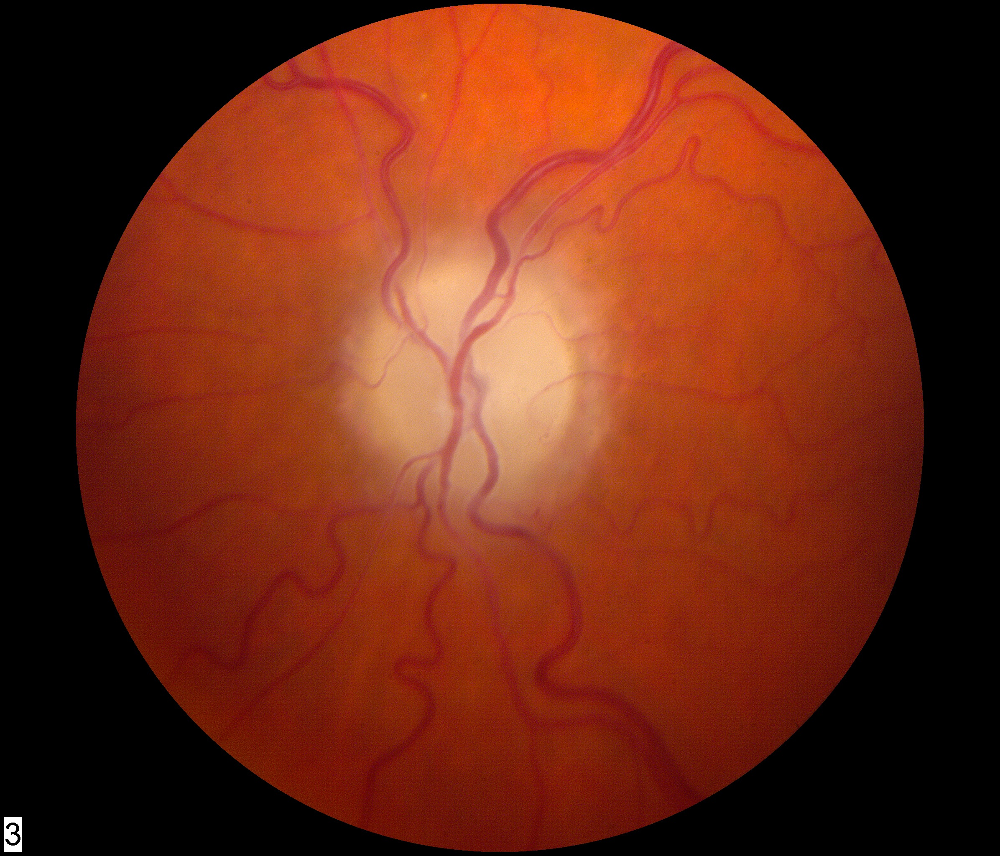
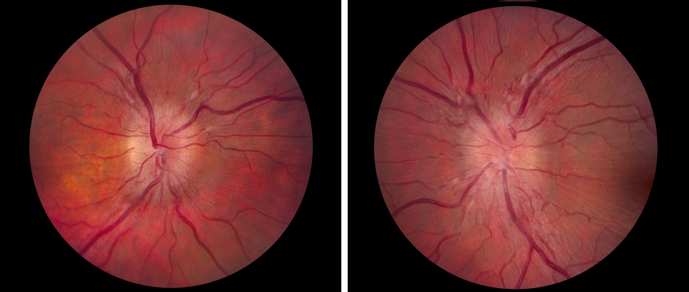
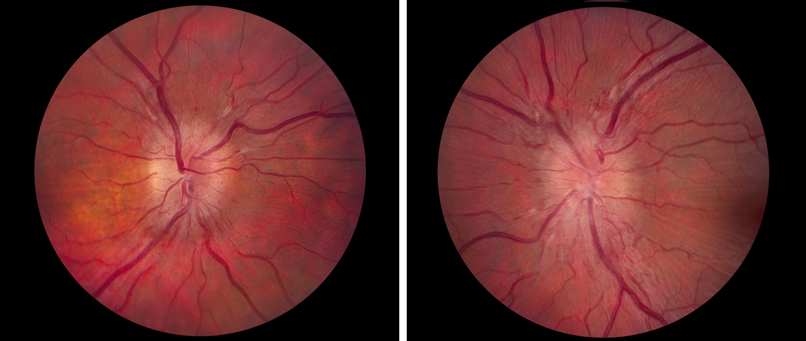
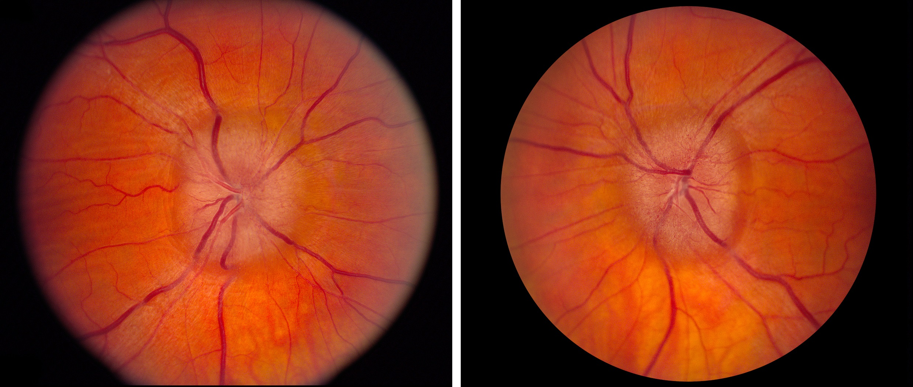
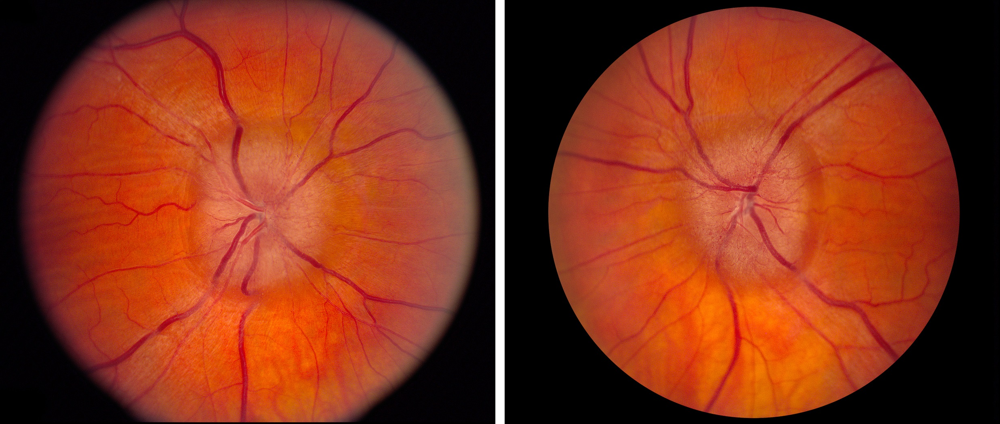
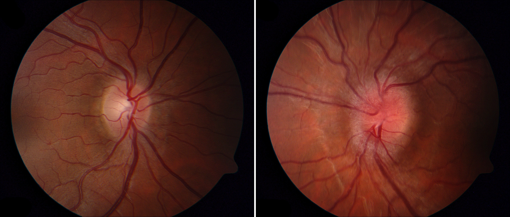
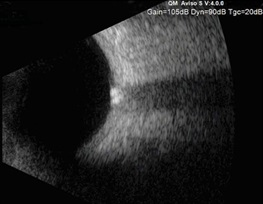

Papilledema

- Acquired optic disc elevation caused by increased intracranial pressure (ICP)
- Mild and chronic versions may be hard to distinguish from congenital optic disc elevation (“pseudopapilledema”)
- Often misdiagnosed when the cause is an optic neuropathy with acquired optic disc elevation
- Continued ICP elevation may cause permanent vision loss from death of optic nerve axons (“post papilledema optic neuropathy”)
- Treatment is aimed at reducing ICP and protecting the optic nerve
- Episodic “blackouts” of vision lasting seconds in one or both eyes, occurring spontaneously or on standing (“transient obscurations of vision”)
- Flickering lights in the peripheral visual field
- Head, neck, and/or interscapular pain
- Pulsatile tinnitus
-
Visual acuity is normal unless there is
- Macular edema or hemorrhage
- Marked papilledema
- Atrophic papilledema (death of axons)
 - Nerve fiber bundle visual field defects (may be minimal)
- Optic disc elevation--usually in both eyes--but sometimes asymmetric and rarely confined to one eye
-
Papilledema can be graded in this way
- Mild papilledema: elevated neuroretinal rim tissue; indistinct optic disc margin and adjacent peripapillary retina because of swollen axons; preserved physiologic cup
- Moderate papilledema: elevated neuroretinal rim tissue with encroachment on the physiologic cup
- Marked papilledema: elevated optic disc with surface and marginal hemorrhages, cotton wool spots, and hard exudates; physiologic cup is lost
- Chronic papilledema: elevated optic disc with dilated surface capillaries
- Early atrophic papilledema: elevated optic disc with “glazed” surface from gliosis and mild axon loss
- Late atrophic papilledema: gray-white optic disc that has flattened because of marked axon loss
 
 


- Congenital optic disc elevation (pseudopapilledema) (See Elevated Optic Disc )
- Diabetic papillopathy
- Typical and atypical optic neuritis
- Non-arteritic ischemic optic neuropathy
- Arteritic ischemic optic neuropathy
- Hypertensive optic disc edema
- Leber hereditary optic neuropathy
- Infiltrative (neoplastic) optic neuropathy
- Central retinal vein occlusion
-
Distinguish papilledema from a congenitally anomalous elevated optic disc and from other causes of acquired optic disc elevation, as follows
- Papilledema displays doughnut-shaped optic disc elevation, whereas congenitally anomalous optic disc elevation displays dome-shaped elevation (See Elevated Optic Disc )
- Papilledema lacks drusen, wheareas congenitally anomalous elevation often displays visible or buried drusen (See Drusen Optic Neuropathy )
- Papilledema has a indistinct peripapillary nerve fiber layer, whereas congenitally anomalous optic disc elevation has a distinct peripapillary nerve fiber layer
- Order fundus autofluorescence photography, orbital ultrasound, CT or enhanced-depth OCT to rule out buried drusen of congenitally anomalous optic disc elevation
- Distinguish papilledema from other acquired optic neuropathies in part by the fact that papilledema is binocular and causes relatively little impairment in vision (unless optic disc swelling is marked or the optic disc is atrophic)
- If you cannot exclude papilledema, order brain CT and CT venography (CTV) or MRI and MR contrast venography (MRV) to rule out mass lesions, hydrocephalus, dural venous sinus malformations, fistulas, or thrombosis
- Order lumbar puncture if brain imaging is normal
-
Diagnose idiopathic intracranial hypertension (IIH) only if
- Lumbar puncture shows an elevated opening pressure and normal constituents
- Brain imaging discloses no abnormalities apart from those associated with non-obstructive high ICP
- Papilledema is present
- There are no neurologic manifestations apart from those caused by high ICP
- The patient is taking no medications that would raise ICP (See Idiopathic Intracranial Hypertension )
- Treat idiopathic and non-idiopathic causes of papilledema as appropriate




- Treatment will be aimed at the underlying cause for high ICP, at lowering ICP, and at protecting the optic nerve from damage owing to high ICP
- In most patients with papilledema from IIH, ICP can be successfully normalized with acetazolamide
- Surgical options (ventriculoperitoneal shunt, optic nerve sheath fenestration, venous sinus stenting) may be necessary for medically-refractory papilledema
- Optic nerve-related vision loss often improves following interventions, but…
- Despite prompt and competent intervention, vision may not recover and may even worsen over time, especially if papilledema is atrophic and optic nerve-related vision loss is severe at the time of diagnosis
-
Trap: surgical methods to lower intracranial pressure are not indicated to correct refractory headache when there is no papilledema